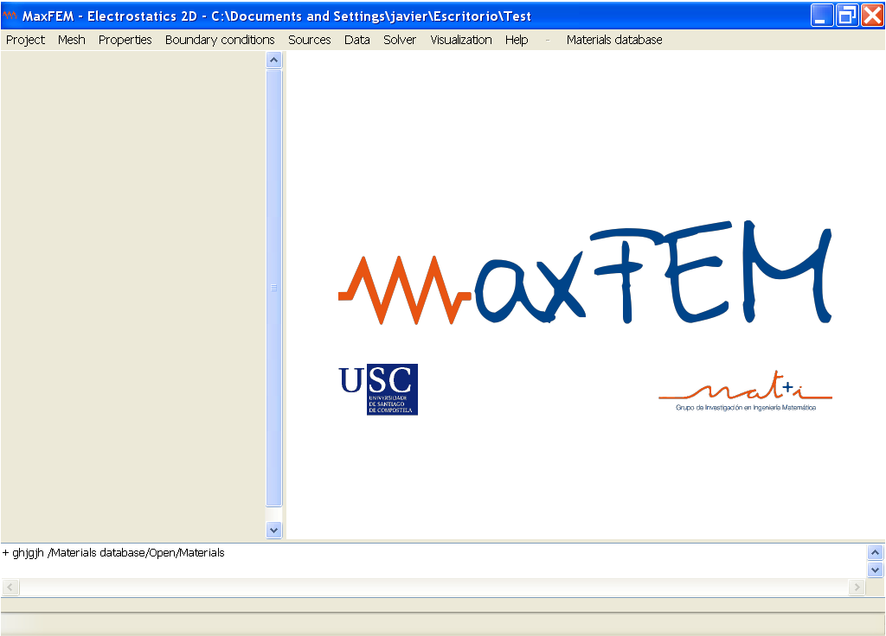
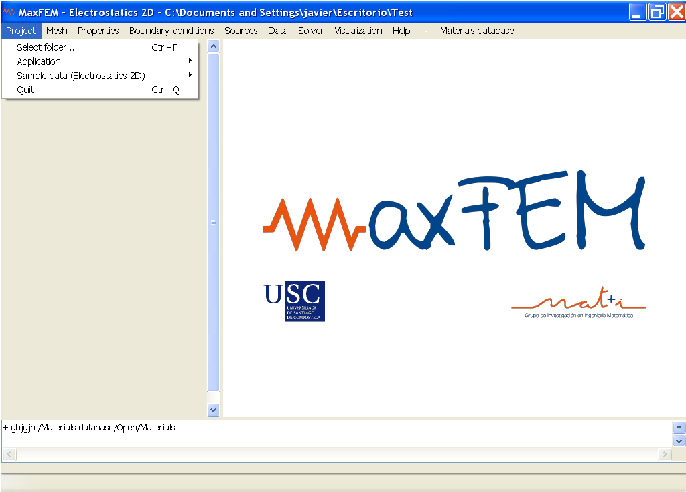
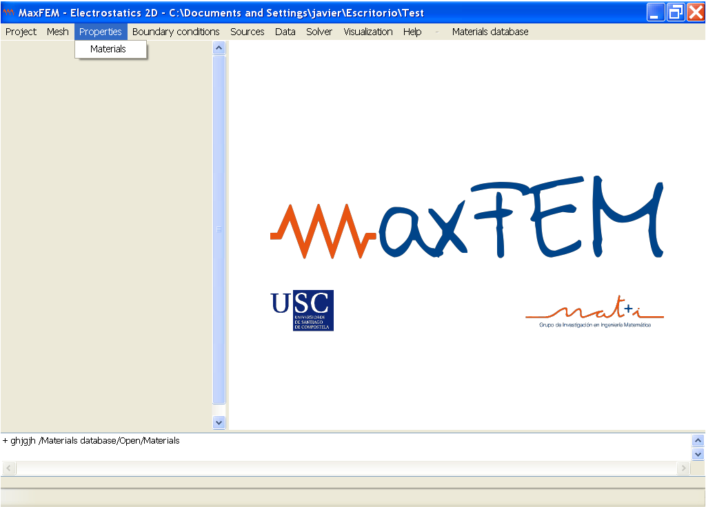
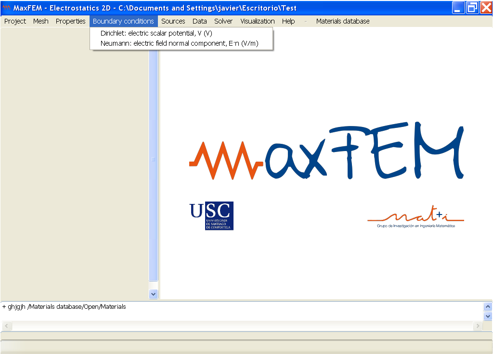
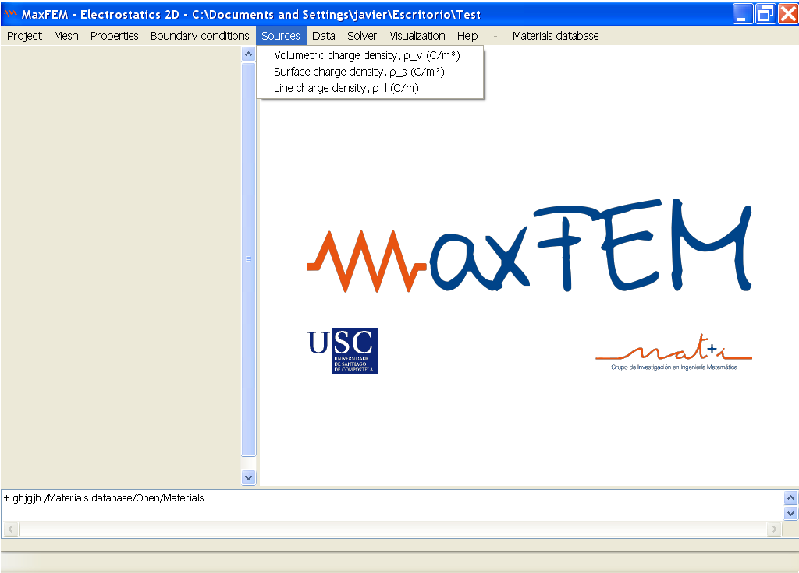
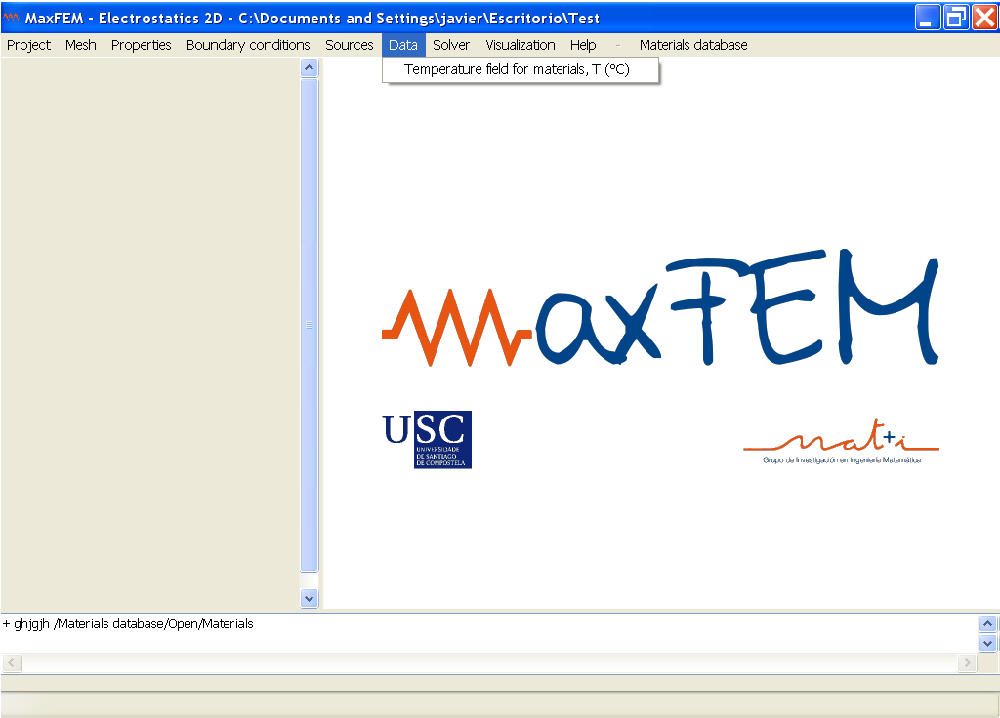
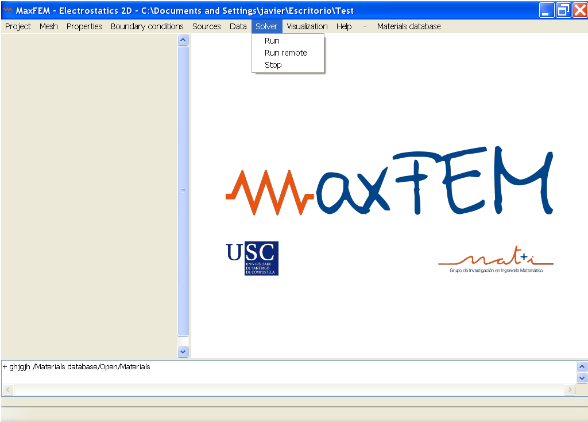
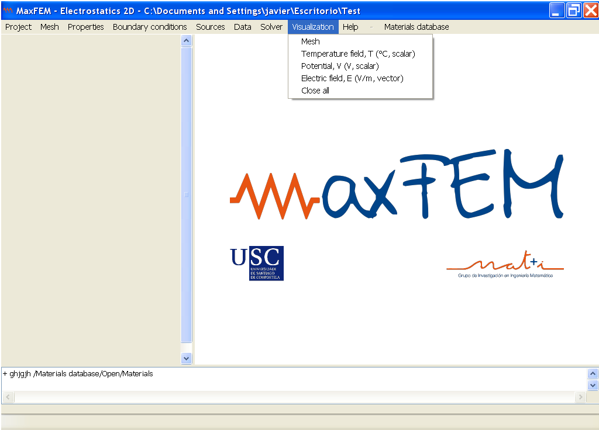
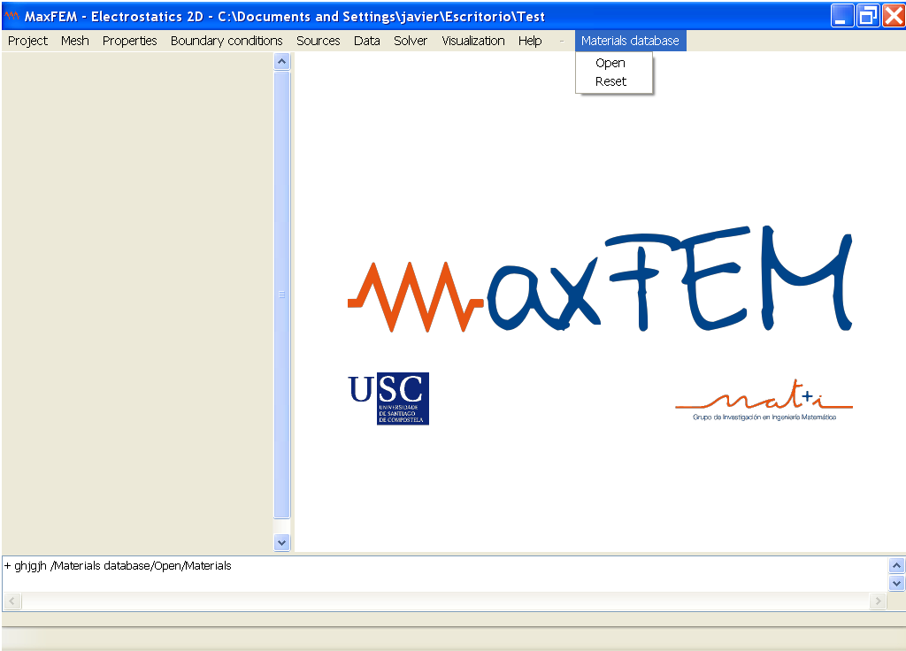
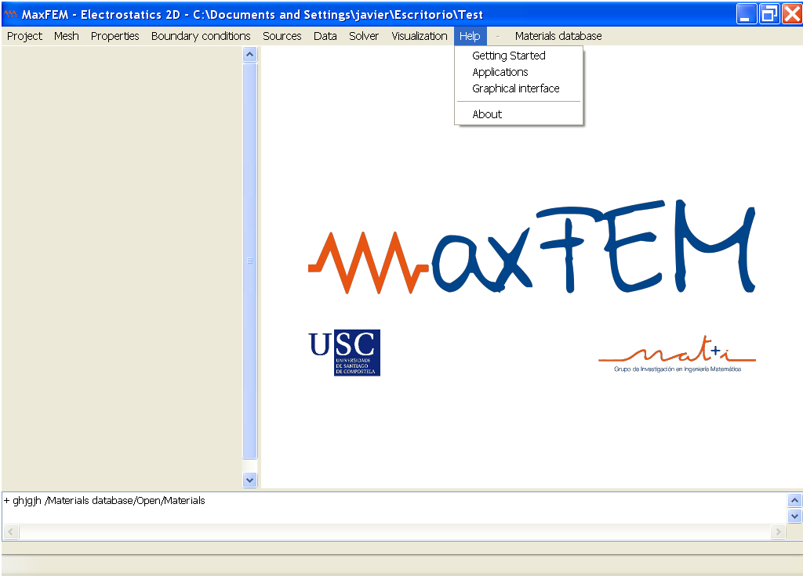

The different parts of menu bar of MaxFEM are presented below:

Select Folder: lets you choose or change the working directory.
Application: lets you choose the application that is going to work.
Sample data: to load an example to be solved or resolved.
Quit: exits the application.

Open: lets you choose the mesh that is going to be used in the example. The allowed formats are .mfm, .unv, .vtk, .vtu and .pvd.
Materials: lets you assign a material to each surface reference from a list of defined materials.

Dirichlet: lets you specify a Dirichlet conditions given by a constant or a function.
Neumann: lets you specify a Neumann conditions given by a constant or a function.
| Application | Dirichlet: electric scalar potential, V (V) | Dirichlet: magnetic vector potential, Az (Wb/m) | Dirichlet: magnetic vector potential, Aθ (Wb/m) | Neumann: surface charge density, -Dㆍn (C/m2) | Neumann: inward current flow, -Jㆍn (A/m2) | Neumann: inward current intensity, I(A) | Neumann: tangential component of magnetic field, Hㆍτ (A/m) | Dielectric boundary | Source current intensity, I(A) |
| Electrostatics 2D and 3D | x | - | - | x | - | - | - | - | - |
| Direct current 2D and 3D | x | - | - | - | x | x | - | - | - |
| Magnetostatics | - | x | - | - | - | - | x | - | - |
| Eddy currents 2D | - | x | - | - | - | - | x | - | - |
| Eddy currents axisymmetric | - | - | x | - | - | - | x | - | - |
| Eddy currents 3D | - | - | - | - | - | - | - | x | x |
| Transient magnetics 2D | - | x | - | - | - | - | x | - | - |
(x: represents this application has that boundary condition; -: represents this application has not that boundary condition)

Depending on the application a different kind of source can be used. The sources available for each application are summarized in the following table:
| Application | Puntual charge: ρp | Line charge: ρl | Surface charge: ρs | Volumetric charge: ρv | Volumetric sources: Jz, I | Surface sources: JSz, I | Volumetric sources: Jz, I, ΔV | Surface sources: JSz, I, ΔV | Volumetric sources & Stranded conductor: Jz, I | Volumetric sources & Solid conductor: I, ΔV |
| Electrostatics 2D | - | x | x | x | - | - | - | - | - | - |
| Electrostatics 3D | x | x | x | x | - | - | - | - | - | - |
| Direct current 2D | - | - | - | - | - | - | - | - | - | - |
| Direct current 3D | - | - | - | - | - | - | - | - | - | - |
| Magnetostatics 2D | - | - | - | - | x | x | - | - | - | - |
| Eddy currents 2D | - | - | - | - | - | - | - | - | x | x |
| Eddy currents axisymmetric | - | - | - | - | - | - | - | - | x | x |
| Eddy currents 3D | - | - | - | - | - | - | - | - | - | - |
| Transient magnetics 2D | - | - | - | - | - | - | x | x | - | - |
(x: represents this application has that source; -: represents this application has not that source)

As in the previous case, depending on the application, a different kind of data will be used. The following table specifies the input data available for each application:
| Application | Temperature field for materials | Mathematical parameters: convergence tolerance | Mathematical parameters: max. number iterations | Time interval | Frequency |
| Electrostatics 2D and 3D | x | - | - | - | - |
| Direct current 2D and 3D | x | - | - | - | - |
| Magnetostatics 2D | - | x | x | - | - |
| Transient Magnetics 2D | - | x | x | x | - |
| Eddy currents 2D, 3D and cylindrical | - | - | - | - | x |
(x: represents this application has that data; -: represents this application has not that data)

Run: lets you run a configuration stablished by the user.
Run remote: lets you run in a remote computer a configuration stablished by the user.
Stop: lets you stop a process that the user started.

The following table summarizes the type of visualizations available depending on the application:
| Applications | Mesh | Temperature, T | Potential, V | Electric field, E | Current density, J | Intensities, I | Domain mesh | Dielectric mesh | Magnetic vector potential, A | Magnetic field, H | Magnetic flux density, B | Active power density, Pd | Lorentz force density, J×B | Close all |
| Electrostatics 2D | x | x | x | x | - | - | - | - | - | - | - | - | - | x |
| Electrostatics 3D | x | x | x | x | - | - | - | - | - | - | - | - | - | x |
| Direct current 2D | x | x | x | x | x | - | - | - | - | - | - | - | - | x |
| Direct current 3D | x | x | x | x | x | - | - | - | - | - | - | - | - | x |
| Magnetostatics 2D | x | - | - | - | - | - | - | - | x | x | x | - | - | x |
| Transient magnetics 2D | x | - | - | - | - | x | - | - | x | x | x | - | - | x |
| Eddy currents 2D | x | - | - | - | x | - | - | - | x | x | x | x | x | x |
| Eddy currents axisymmetric | x | - | - | - | x | - | - | - | x | x | x | x | x | x |
| Eddy currents 3D | - | - | - | - | x | - | x | x | - | x | x | x | - | x |
(x: represents this application has that visualization; -: represents this application has not that visualization)

Open: open the content of the materials database to view or edit the properties of the existing materials or to define new materials.
Reset: restores the materials database to its original state.

User Guide: launches the help browser for the different applications available and the graphical interface.
Getting Started: launches the help viewer outside the interface.
Mathematical Models: launches the help viewer of the mathematical formulation used in the MaxFEM applications.
About: displays a window with information about the license, version, and authors of the program.
